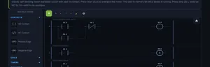
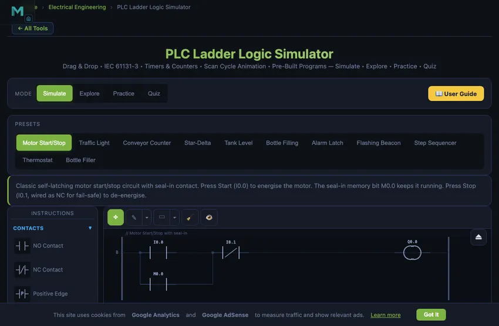

PLC Ladder Logic Simulator
3D Model — PLC Ladder Logic Simulator
Free online PLC simulator — build and run ladder logic in your browser, no download. Allen-Bradley-style instructions, timers, counters, FBD view, quizzes.
Drag & Drop • IEC 61131-3 • Timers & Counters • Scan Cycle Animation • Pre-Built Programs — Simulate • Explore • Practice • Quiz
1 Overview
Welcome to the PLC Ladder Logic Simulator — a free, browser-based IEC 61131-3 ladder diagram trainer designed for automation students, electrical technicians, vocational instructors, and control engineers. This tool provides interactive ladder logic programming with contacts, coils, timers, counters, compare blocks, and math instructions — all without installation, signup, or licensing fees.
The simulator features 29 instruction types across 7 categories, 11 pre-built program presets, 8 digital inputs and 8 digital outputs with real-time I/O monitoring, scan cycle simulation, and 4 interactive learning modes (Simulate, Explore, Practice, Quiz). Learn PLC programming from basic relay logic to complex timer/counter applications.
2 Building the Circuit

Select instructions from the collapsible palette on the left. Click an instruction to add it to the currently selected rung, or drag it directly onto the ladder diagram. Use the Add Rung button to insert new rungs. Click Run to start the PLC scan cycle and watch power flow through your logic in real time.
Load one of the 11 preset programs (Motor Start/Stop, Traffic Light, Conveyor Counter, Star-Delta, Tank Level, Bottle Filling, Alarm Latch, Flash Beacon, Step Sequencer, Thermostat and more) to instantly study a working ladder diagram. Toggle inputs using the I/O panel below the canvas and observe how outputs respond based on your logic.
3 Instruction Library — 25 IEC 61131-3 Instructions
Contacts (4): Normally Open (NO) contact, Normally Closed (NC) contact, Positive Edge detection (rising edge), Negative Edge detection (falling edge).
Coils (5): Standard output coil, Set (latch) coil, Reset (unlatch) coil, Negated output coil, RES (reset a timer or counter).
Timers (4): TON (on-delay timer), TOF (off-delay timer), TP (pulse timer), RTO (retentive on-delay). All with configurable preset time values.
Counters (3): CTU (count up, with optional reset input), CTD (count down, reset via the RES instruction), CTUD (up/down with a configurable down input). All with configurable preset values.
Compare (6): EQU (equal), NEQ (not equal), GRT (greater than), GEQ (greater or equal), LES (less than), LEQ (less or equal). Compare register values for conditional logic.
Math (5): MOV (move/copy value), ADD (addition), SUB (subtraction), MUL (multiply), DIV (divide, with divide-by-zero fault detection). Perform arithmetic on data registers.
Structure (2): Branch Start (opens parallel OR path), Branch End (closes parallel path). Used to create OR logic in rungs.
4 Building & Simulating Programs
Instructions are organised into collapsible categories in the palette. Click to add to the active rung, or drag onto the canvas. Each rung represents one logic line from the left power rail to the right power rail.
11 Pre-Built Programs: Motor Start/Stop (seal-in circuit), Traffic Light (sequential timer), Conveyor Counter (count and stop), Star-Delta (motor starter with timer), Tank Level (seal-in with high-level cutoff), Bottle Filling, Alarm Latch, Flash Beacon (two-timer flasher), Step Sequencer, Thermostat (hysteresis), and an FBD bottle-filling system. Most presets carry both a ladder and an FBD version — toggle views freely.
Simulation: Green highlighting shows true power flow segment by segment — the wire is lit only up to the first open contact, exactly like the online-monitoring view in RSLogix or TIA Portal, so you can see at a glance which condition is blocking a rung. The I/O panel provides interactive input toggles and output LED indicators — and while the simulation is running you can also click an input contact (or an FBD Input Var block) directly on the canvas to toggle it. The cursor changes to a pointer over these clickable nodes, and momentary NO/NC buttons respond to press-and-hold. Readout panel shows scan time, cycle count, active rungs, and memory usage.
Run / Pause / Stop: Pause freezes scanning with all state held, so you can inspect values or continue with Step. Stop behaves like a real PLC switched from RUN to STOP: scanning halts and all outputs de-energise, while retentive state (memory bits, timers, counters, registers) is kept.
Program checking: When you press Run, the simulator validates every address (a typo like Q00 or a coil writing to an input is flagged in the warning bar) and warns when the same output coil is used on more than one rung — on a real PLC only the last rung's result sticks each scan (last-write-wins).
Data & Memory panel: Below the I/O panel is a live watch table, the same idea as a TIA Portal watch table or a Studio 5000 tag monitor. Click any memory bit (M0.0–M0.7) to force it, type into any data register (D0–D7) to set its value — both work while the program is running — and watch every timer and counter in your program report its PRE/ACC or CV/PV together with its EN/TT/DN and DN/OV status bits. This is how you drive the compare and math instructions: load the Thermostat preset, then type into D0 to sweep the temperature across the setpoints and watch the hysteresis flip the heater.
Editing: Double-click any ladder instruction or FBD block (or right-click → Edit Properties) to open its properties: the address, timer and counter presets, compare and math operands, plus a one-line reminder of what the instruction does. You can also swap the instruction for another in the same family right there — TON↔TOF↔TP↔RTO, CTU↔CTD↔CTUD, or any of the six compare types — and your settings carry across. While the program runs the dialog shows live values (PRE/ACC with EN/TT/DN for timers, CV/PV for counters, operand values for compare and math). Right-click also offers delete and rung insert. Use Step to execute one scan at a time. Ctrl+Z to undo, Esc to close the dialog.
5 Explore, Practice & Quiz
Explore provides concepts across Fundamentals (scan cycle, memory addressing, data types), Contacts & Coils (NO, NC, latch/unlatch), Timers (TON, TOF, TP applications), Counters (CTU, CTD, cascaded counters), Logic (AND, OR, XOR, seal-in), and Applications (motor control, sequencing, safety circuits).
Practice offers randomised problems on timer calculations, counter presets, Boolean logic evaluation, scan cycle analysis, and addressing with step-by-step solutions.
Quiz tests with 5 randomly selected questions from a pool covering instruction types, timing diagrams, addressing modes, and IEC 61131-3 standards.
6 Keyboard Shortcuts & Tips
Shortcuts: Space = Run/Stop, Ctrl+Z = Undo, Delete = Delete selected, Escape = Cancel.
- Always use a seal-in contact (self-holding circuit) for latching motor starters — this is the fundamental PLC pattern.
- Place stop contacts as NC (normally closed) for fail-safe operation — a broken wire stops the motor.
- Use TON timers for most delay applications; TOF is specifically for keeping outputs on after the input drops.
- Organise your program: inputs at the top, processing in the middle, outputs at the bottom.
- Use Set/Reset coils instead of seal-in circuits when the set and reset conditions are on different rungs.
- Standard IEC addressing: I = Input, Q = Output, M = Memory, T = Timer, C = Counter.
- The PLC processes rungs top to bottom, left to right — rung order matters for outputs that depend on other outputs.
PLC Ladder Logic Simulator — Learn Programmable Logic Controller Programming Online

PLC ladder logic is the graphical programming language used to program programmable logic controllers (PLCs) — the ruggedized computers that run industrial automation. Defined in the IEC 61131-3 standard, it represents control logic as horizontal rungs that resemble electrical relay circuits: input conditions (contacts) on the left drive output actions (coils) on the right, and the PLC scans every rung from top to bottom in a continuous cycle. This simulator lets you build and run ladder diagrams in the browser — placing contacts, coils, timers, and counters, then watching the scan cycle energise outputs in real time.
A Free Online PLC Simulator — No Download, No Sign-Up
Unlike desktop PLC training software that must be installed and licensed, this PLC simulator runs online — open the page and start programming. There is no download, no account, no trial period, and no locked features. That matters if you are practicing on a school computer, a work laptop without admin rights, or a tablet. Here is how it compares with the other free simulators commonly used in US automation courses:
| Capability | This simulator | PLC Fiddle | PLC Simulator Online | LogixPro-style desktop trainers |
|---|---|---|---|---|
| Runs in browser, no install | Yes | Yes | Yes | No — Windows install |
| Price | Free, no sign-up | Free | Free tier | Paid license |
| Ladder instruction set | 25 types incl. edge contacts, RTO, CTUD, compare & math | Basic contacts, timers, counters | Core ladder set | Full RSLogix-style set |
| Function Block Diagram (FBD) view | Yes — 24 block types | No | No | No |
| Built-in exercises & scored quizzes | Yes — Practice + Quiz modes | Challenges | Docs site | Lab manual (paid) |
| Power-flow debugging view | Yes — segment-level highlighting like RSLogix/TIA online monitoring | Basic | Basic | Yes |
| Allen-Bradley terminology (XIC/XIO/OTE) | Taught alongside IEC symbols | No | No | Yes |
If your course uses LogixPro or another paid desktop trainer and you need something to practice on at home, this page works as a free LogixPro alternative for the core skills: contacts, coils, seal-in circuits, timers, counters, and troubleshooting with live power flow.
Practice PLC Programming Online — Exercises and Quizzes
Most online PLC simulators stop at the editor. This one includes a full learning progression: Explore mode explains 30+ concepts (scan cycle, seal-in, timer types, counters, safety circuits) with worked examples; Practice mode generates unlimited PLC exercises with answers — timer calculations, counter problems, Boolean logic evaluation, and find-the-fault debugging scenarios; and Quiz mode scores you on a 15-question bank aligned with what US community college and CTE automation courses test. Eleven pre-built programs (motor start/stop with fail-safe stop, star-delta starter, traffic light, conveyor counting, tank level, flashing beacon) give you real industrial patterns to pull apart and rebuild.
Why PLCs Are Still Everywhere More Than 50 Years On
The PLC was invented in 1968, when Dick Morley’s Bedford Associates answered General Motors’ Hydramatic request for a relay-panel replacement; the resulting Modicon 084 shipped in 1969. The control engineering profession has reinvented itself a dozen times since — we now have embedded microcontrollers cheaper than a button, full Linux SBCs in industrial enclosures, and cloud-connected smart sensors with built-in analytics. None of these have displaced PLCs from the factory floor. The reasons are practical, not nostalgic.
PLCs survive because the trade-offs that matter on a factory floor have not changed. They are deterministic: the scan cycle is fixed and known, so timing is repeatable. They are rugged: industrial enclosures rated to IP65 or higher, conformal-coated boards, robust against electrical noise and temperature swings. They are maintainable: a maintenance engineer can read ladder logic without being a software developer, because the diagram looks exactly like the relay-logic circuits the same engineer trained on. And they are certifiable: safety-rated PLCs (SIL2, SIL3) have a regulatory pedigree that no general-purpose microcontroller offers.
The Seal-In Circuit — The First Pattern Every PLC Programmer Learns
Every PLC course starts with the same example: a motor that should start when the Start button is pressed and keep running until Stop is pressed. The naive ladder — start button contact in series with motor coil — only runs the motor while the button is held. Release the button, motor stops. Useless.
The fix is the seal-in (latching) circuit. In parallel with the Start button contact, add a normally-open contact from the motor output coil. When Start is pressed, the motor coil energises; that energises the output bit, which closes the parallel contact, which keeps the rung TRUE even after the Start button is released. The Stop button (normally-closed contact, in series) breaks the rung and de-energises the coil, ending the latch.
This single pattern — coil contact in parallel with start, NC stop in series — underlies every motor starter, conveyor-belt run command, lighting control, and pump start logic in industry. Once you internalise it, the rest of PLC programming is variations on the theme.
Timer Use Cases That Show Up in Every Real Program
- Bottle-filling line. Sensor detects bottle, TON timer holds the fill valve open for 2 seconds. After preset, valve closes, bottle moves on. Adjusting the preset adjusts the fill volume.
- Conveyor belt anti-jam. If conveyor runs for more than 30 seconds without a part-detected sensor pulse, TON triggers a fault output and stops the line. Manual reset required.
- Air-compressor off-delay. Pressure switch triggers compressor start. TOF timer keeps the cooling fan running for 60 seconds after the compressor stops, so heat dissipates before the fan shuts off.
- Flashing fault indicator. Pair of TON timers driving an oscillator: when fault active, light flashes at 1 Hz. The same pattern in software that a 555 timer chip would do in hardware.
References for PLC Programming
- IEC 61131-3:2013 — Programmable controllers — Part 3: Programming languages. The defining standard for ladder logic, structured text, and the other three IEC languages (function block diagram, sequential function chart, and the now-deprecated instruction list).
- Petruzella, F. D. — Programmable Logic Controllers, 5th ed. The widely-used vocational textbook.
- Bolton, W. — Programmable Logic Controllers, 6th ed. The mechanical-engineer-friendly introduction.
- Siemens, Rockwell, Mitsubishi PLC programming manuals — freely available online. Each vendor has its own dialect of IEC 61131-3, but the core is portable.
A Programmable Logic Controller (PLC) is the backbone of modern industrial automation. From manufacturing assembly lines to water treatment plants, PLCs execute control logic that keeps processes running safely and efficiently. Ladder logic, defined in the IEC 61131-3 standard, remains the most widely used PLC programming language worldwide. This free simulator lets you build ladder diagrams with 29 instruction types, simulate scan cycles in real time, and master PLC programming through hands-on practice.
This free PLC ladder logic simulator provides a complete virtual PLC environment directly in your browser. Using standard IEC 61131-3 instruction symbols, you can place contacts, coils, timers, counters, compare blocks, and math instructions onto ladder rungs and observe real-time scan cycle execution. Toggle digital inputs, watch output LEDs respond, and learn how industrial automation programs work through interactive experimentation. Whether you are preparing for a Siemens, Allen-Bradley, or Mitsubishi PLC certification, the fundamental ladder logic concepts are universal and transferable across all PLC brands.
Understanding the PLC Scan Cycle
Every PLC operates in a continuous scan cycle consisting of three phases. First, the Input Scan reads all physical inputs (pushbuttons, sensors, limit switches) and stores their states in an input image table in memory. Second, the Program Scan executes the ladder logic program from the first rung to the last, evaluating each contact condition and updating coil states in an output image table. Third, the Output Scan transfers the output image table values to the physical output modules (motor contactors, solenoid valves, indicator lights). A typical scan cycle takes 1 to 10 milliseconds depending on program size and CPU speed. This cyclic operation ensures deterministic, repeatable behaviour essential for industrial process control.
Contacts and Coils — The Building Blocks
In ladder logic, contacts represent input conditions and coils represent output actions. A Normally Open (NO) contact passes power when its associated address is TRUE (energised). A Normally Closed (NC) contact passes power when its address is FALSE (de-energised). Note the industrial convention for stop circuits: the stop button itself is physically NC (its input reads 1 while healthy) and the program examines it with an NO instruction — so a pressed button or broken wire drops the bit and stops the machine. Emergency-stop functions themselves are implemented in hardwired or safety-rated circuits per ISO 13850, with the PLC monitoring them. Contacts arranged in series create AND logic (all must be true), while contacts on parallel branches create OR logic (any can be true). The seal-in circuit, where an output coil’s own NO contact is placed in parallel with the start button, is the most fundamental PLC pattern — equivalent to a relay self-holding circuit.
Timers and Counters in PLC Programming
Timers introduce time-based control into ladder programs. The TON (On-Delay Timer) is the most common: it starts timing when its input goes TRUE and energises its output bit after the preset time elapses. If the input drops before the preset, the timer resets to zero. The TOF (Off-Delay Timer) passes the input signal immediately and keeps the output energised for the preset duration after the input turns OFF — useful for cooling fans that must run after a motor stops. The TP (Pulse Timer) generates a fixed-width output pulse on each rising edge of its input, regardless of input duration. Counters track events: CTU (Count Up) increments on each rising edge of its count input and sets its output when the accumulated value reaches the preset. CTD (Count Down) decrements from a preset value and sets its output when reaching zero.
IEC 61131-3 Addressing and Data Types
The IEC 61131-3 standard defines a consistent addressing scheme used across PLC manufacturers. I (or %I) prefixes denote physical inputs, Q (or %Q) denotes physical outputs, and M (or %M) denotes internal memory bits (markers). Byte-level addressing uses the format I0.0 where the first number is the byte address and the second is the bit within that byte (0–7). Word registers such as MW0, MW2 store 16-bit integer values for timer presets, counter values, and arithmetic operations. Understanding this addressing scheme is essential for writing structured, maintainable PLC programs across Siemens S7, Allen-Bradley CompactLogix, Mitsubishi FX, and other platforms.
Common PLC Ladder Logic Instruction Reference
| Instruction | Symbol | Function |
|---|---|---|
| NO Contact | ─] [─ | Passes power when address bit is TRUE |
| NC Contact | ─]/[─ | Passes power when address bit is FALSE |
| Output Coil | ─( )─ | Energises output when rung has power flow |
| Set (Latch) | ─(S)─ | Latches output ON; stays ON until Reset |
| Reset (Unlatch) | ─(R)─ | Resets a latched output to OFF |
| TON Timer | [TON] | On-delay: output after preset time elapsed |
| TOF Timer | [TOF] | Off-delay: output stays on after input drops |
| CTU Counter | [CTU] | Counts up on rising edge, output at preset |
| CTD Counter | [CTD] | Counts down from preset, output at zero |
| EQU Compare | [EQU] | TRUE when source A equals source B |
| GEQ / LEQ Compare | [GEQ] [LEQ] | TRUE when source A is ≥ / ≤ source B |
| MUL / DIV Math | [MUL] [DIV] | Multiply / divide two sources into a destination register |
Allen-Bradley / Rockwell Automation in US Industrial Education
In US manufacturing plants, Allen-Bradley (a Rockwell Automation brand) PLCs dominate the installed base — particularly the MicroLogix, CompactLogix, and ControlLogix families. Most US CTE automation programs and community college mechatronics courses teach ladder logic using Rockwell’s Studio 5000 Logix Designer or the free Connected Components Workbench (CCW) software. The core ladder concepts — NO/NC contacts, output coils, TON/TOF timers, CTU/CTD counters — are identical across all these platforms and match exactly what this simulator teaches.
Key Allen-Bradley terminology US students encounter: XIC (Examine If Closed = Normally Open contact), XIO (Examine If Open = Normally Closed contact), OTE (Output Energize = standard coil), OTL/OTU (Output Latch / Unlatch), and TON/TOF/RTO timers. The IEC symbols used in this simulator map directly: XIC = ] [, XIO = ]/[, OTE = ( ). Once you understand the logic, transitioning to any Allen-Bradley product is a matter of learning the software interface, not relearning the concepts.
The classic US teaching example is the three-wire motor starter: a 120 V control circuit (per NFPA 79, the US electrical standard for industrial machinery) with a momentary Start button, a physically-NC momentary Stop button, and a motor contactor whose auxiliary contact provides the seal-in — exactly the Motor Start/Stop preset in this simulator. The same ladder pattern then scales to 480 V three-phase motor loads through the contactor. Practicing that circuit here, including the fail-safe NC-stop wiring convention, transfers one-to-one to hardware labs.
For US students pursuing industrial automation certifications: NIMS Industrial Technology Maintenance credentials (Electrical Systems, Hydraulics & Pneumatics, and Controls) all include PLC ladder logic as a core competency. The NCCER Industrial Instrumentation curriculum covers PLC fundamentals from Level 2 onward. The ISA Certified Automation Professional (CAP) certification and Rockwell Automation’s own training certificates both expect fluency in ladder logic as the everyday language of industrial control.
Who Uses This PLC Ladder Logic Simulator?
This PLC training simulator is designed for Technical and Vocational Education and Training (TVET) students studying industrial automation, electrical engineering, and mechatronics. Vocational instructors use it as a classroom teaching aid to demonstrate ladder logic concepts before students work on physical PLC trainers. Maintenance electricians use it to practice troubleshooting and understand existing plant programs. Automation engineers prototype control sequences before downloading to actual PLCs. The four learning modes (Simulate, Explore, Practice, Quiz) provide a complete educational progression from theory to hands-on application, making it an ideal free PLC programming trainer for learners at any level.
Frequently Asked Questions
Is there a free PLC simulator with no download?
Yes — this PLC simulator runs entirely online in your browser with no download, no installation, and no sign-up. It works on Windows, Mac, Chromebooks, and tablets, which makes it practical for school computer labs and work laptops without admin rights. All 25 ladder instructions, the FBD editor, the practice exercises, and the quizzes are free with no locked features.
Can I use this as a free alternative to LogixPro or PLC Fiddle?
For learning core ladder logic, yes. Compared with LogixPro-style paid desktop trainers, this simulator covers the same fundamentals — XIC/XIO contacts, OTE/OTL/OTU coils, TON/TOF/RTO timers, CTU/CTD counters, seal-in circuits, and live power-flow monitoring — free and without installing anything. Compared with PLC Fiddle, it adds edge contacts, retentive timers, up/down counters, compare and math instructions, a full Function Block Diagram view, and built-in scored quizzes. Vendor-specific I/O configuration and hardware downloads still require the vendor's own software.
What is PLC ladder logic programming?
PLC ladder logic is a graphical programming language defined in IEC 61131-3 that resembles electrical relay circuit diagrams. Programs are written as horizontal rungs between two vertical power rails. Each rung contains input conditions (contacts) on the left and output actions (coils) on the right. The PLC scans all rungs from top to bottom in a continuous cycle, reading inputs, executing logic, and updating outputs. Ladder logic remains the most widely used PLC programming language in industrial automation.
What is the difference between TON, TOF, and TP timers in PLC programming?
TON (On-Delay Timer) starts timing when its input turns ON and sets its output after the preset time elapses. If the input turns OFF before the preset, the timer resets. TOF (Off-Delay Timer) passes the input signal immediately and keeps the output ON for the preset duration after the input turns OFF. TP (Pulse Timer) generates a fixed-duration pulse when triggered by a rising edge, regardless of how long the input stays ON. These three timer types cover most industrial timing requirements.
How does a PLC scan cycle work?
A PLC scan cycle has three phases repeated continuously: (1) Input Scan — the PLC reads all physical inputs and stores their states in an input image table. (2) Program Scan — the PLC executes the ladder logic program from top to bottom, rung by rung, using the input image to evaluate contacts and writing results to an output image table. (3) Output Scan — the PLC transfers the output image table to the physical outputs. A typical scan cycle takes 1–10 milliseconds depending on program size. This cyclic operation ensures deterministic, predictable control behaviour.
What is the difference between a normally open (NO) and normally closed (NC) contact?
A normally open (NO) contact blocks power flow when its bit is 0 and closes to pass power when the bit is 1. A normally closed (NC) contact is the opposite — it passes power when its bit is 0 and opens when the bit is 1. In Allen-Bradley notation these are written XIC (Examine If Closed) for NO and XIO (Examine If Open) for NC. For fail-safe stop circuits, the stop button itself is physically wired NC (its input bit is 1 while healthy) and the program examines it with an NO (XIC) instruction — so pressing the button or a broken wire drops the bit to 0, opens the rung, and de-energises the output.
What is the difference between a contact and a coil in ladder logic?
Contacts are input instructions placed on the left of a rung — they examine the state of a bit (a physical input, an internal relay, or a timer/counter status) and either pass or block power flow. Coils are output instructions placed at the right end of a rung — they write a result back to a bit, energising an output, latch, timer, or counter when the rung has continuity. A rung becomes true and its coil energises only when an unbroken path of conducting contacts links the left power rail to the coil.
Explore Related Simulators
If you found this PLC ladder logic simulator helpful, explore our Electro-Pneumatic Circuit Simulator, Pneumatic Circuit Simulator, DC Motor Simulator, and Diode & Rectifier Simulator for more hands-on practice.